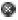
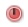

Understanding Situation Events
The products that run in the Marvel Monitoring environment come with their own set of situations. These predefined situations serve as models for defining custom situations for your environment.
- Situation Formula
- Situations formulas are constructed of one or more expressions. For example, a situation that checks for free disk space below 20% on a Windows system has an expression that uses the Logical Disk attribute "Free Megabytes" and reads as Free Megabytes < 20.The situation will read data samples taken at the managed system at set intervals, such as once a day for the disk space situation in our example.
- Situation Event Indicators
- When a situation is associated with a managed system, it also has a state
setting that determines which light, is displayed on the Navigator item when
the situation becomes true. From highest severity to lowest, they are as
follows:
Table 1. Event severity  Fatal 
Critical 
Minor 
Warning Harmless Informational 
Unknown - Enterprise Status Workspace
- The initial default workspace is the Enterprise Status workspace. The views in this workspace give an excellent overview of situation events in your monitored environment and their status. One of the views, Situation Event Console, lists the open events and their severities.
- Event Flyover List
- In the Navigator view or a graphic view, you can hover the mouse over an
event indicator to open a flyover listing of open situation events with this
information:
- Event state
- Situation name
- Name of the system on which the event occurred Two-letter code for the monitoring agent
- Event timestamp
- Display item, if one was specified
- Situation status icon if:
Table 2. Situation status icons Icon Description 
The event has been acknowledged;  The acknowledgement has expired. The acknowledgement was removed before it had expired and the situation is still true. 
The situation is not functioning properly and you will not be able to open its event results workspace. The situation has been stopped and you will not be able to open its event results workspace.
The link
 is to the event results workspace for the
situation.The pop-up menu for the event items has options for working with the situation and event:
is to the event results workspace for the
situation.The pop-up menu for the event items has options for working with the situation and event:Table 3. Options for working with the situation and event Icon Description 
Edit the situation Start the situation Stop the situation Quick acknowledge the event Acknowledge the event Close the event (pure events only) - Event Results Workspace
- The event results workspace shows the values of the attributes when the situation fired and their current values. It shows any expert advice the situation author might have written and any hypertext links to go to for more information. The take action view enables you to select or define a command to be invoked at the managed system.The table views showing the initial situation values and their current values also have pop-up menus that include the option to launch an application. If you have a favorite diagnostic tool, you can start it from here.
- Event Acknowledgement
- When multiple users are monitoring the network for events, one of them can acknowledge an event to indicate it has been seen and the problem is being worked on. Acknowledging an event changes its event status from Open to Acknowledged until the acknowledgement expires or until the situation is no longer true.You can add notes to an acknowledgement and attach files that are pertinent to the event.
- Automated Responses
- Automated responses to events can improve the efficiency of systems
management by reducing user workload and errors and allowing quicker
responses to problems. Marvel Enterprise Portal provides two levels of
automation: reflex and advanced.
- Reflex automation provides simple automated system actions. It
allows you to monitor a condition on a particular system and to
specify a command to execute there. The command can be a single
action or a script of commands. Marvel Enterprise Portal receives no
feedback after it sends the command or notifies the user.
Reflex automation is implemented by adding an action command to a situation definition that runs when an event is opened.
- Advanced automation allows you to implement more complex workflow strategies than you can create through simple reflex automation. Policies are used to perform actions, schedule work, and automate manual tasks. A policy comprises a series of automated steps called activities, which are connected and can branch to create a workflow. After an activity is completed, a return code is received with feedback and the next activity prescribed by the feedback is carried out.
With policies you can monitor multiple conditions simultaneously on any number of systems and have selected activities take place when specific conditions occur. Many monitoring agents come with predefined policies that you can use as is or modify for your environment.
You can also create your own policies. The Workflows editor is provided for designing and managing policies.
- Reflex automation provides simple automated system actions. It
allows you to monitor a condition on a particular system and to
specify a command to execute there. The command can be a single
action or a script of commands. Marvel Enterprise Portal receives no
feedback after it sends the command or notifies the user.